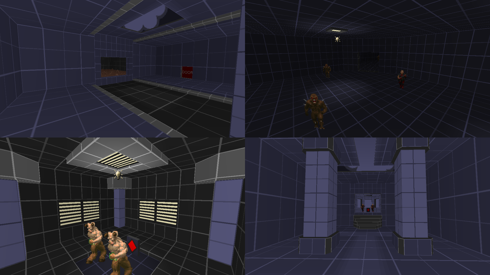

DOWNLOAD LINKS


| Year | 2021 |
| IWAD | Doom II |
| Source port | GZDoom |
| Game mode(s) | Single-player |
| Map(s) contributed | MAP02 |
Oops! All Greyboxes! was a GZDoom community project hosted by Remilia Scarlet with the premise of making maps with prototype textures. Essentially, the idea was to make maps that look “unfinished” but play like finished products. In all, 11 maps were gathered into the final mapset.
My contribution to the project was MAP02, named “Throwback”. The map went through a couple of design iterations before ultimately becoming the map you see in the final mapset – the only thing I kept across all versions was the first room. My original idea was to make a map loosely based on Doom‘s E1M1, which I ended up scrapping later in favor of an arena-style map with vertical movement by means of anti-gravity pads. The second idea, however, was also scrapped in favor of a more classically inspired map.
Anyway, “Throwback” starts off with a room whose layout should look familiar to fans of classic Doom – but once you go beyond it, it becomes more than a mere reference. With the map, I made a conscious attempt to make the layout as non-linear as possible with as few doors as possible. On the gameplay side of things, the map has the player look for and press 4 buttons in order to gain access to a key and get the hell out of dodge.